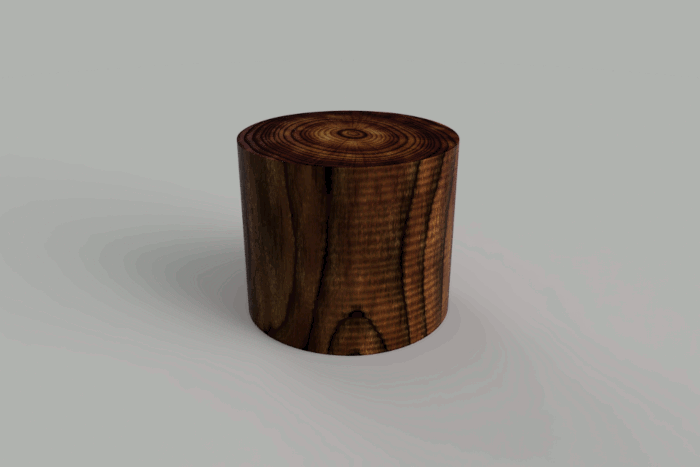

Provides access to the Rendering functionality in Fusion and is accessed from the Design object.
| Name | Description |
| activateRenderWorkspace |
Activates the Render workspace for this design. If the workspace is already active, nothing happens and it remains active. |
| classType |
Static function that all classes support that returns the type of the class as a string. The returned string matches the string returned by the objectType property. For example if you have a reference to an object and you want to check if it's a SketchLine you can use myObject.objectType == fusion.SketchLine.classType(). |
| Name | Description |
| inCanvasRendering | Provides access to the in-canvas rendering capabilities of Fusion. This uses the active viewport and the user will see the rendering as it takes place. |
| isRenderWorkspaceActive | Returns whether the Render workspace for this Design is active. Returns true if the workspace is active, false otherwise. |
| isValid | Indicates if this object is still valid, i.e. hasn't been deleted or some other action done to invalidate the reference. |
| objectType | This property is supported by all objects in the API and returns a string that contains the full name (namespace::objecttype) describing the type of the object. It's often useful to use this in combination with the classType method to see if an object is a certain type. For example: if obj.objectType == adsk.core.Point3D.classType(): |
| parentDesign | Returns the parent Design this RenderManager was obtained from. |
| renderEnvironments | Provides access to the provided environments and supports specifying a custom environment. This provides access to the same list of environments that you see in the "Environment Library" tab of the "SCENE SETTINGS" dialog. |
| rendering | Provides access to the local and cloud rendering capabilities of Fusion. In both cases, the rendering is done in a process external to Fusion, either a local or cloud rendering process. |
| sceneSettings | Returns the SceneSettings object that provides access to all of the settings that control how the scene is rendered. This provides equivalent functionality as the "Settings" tab in the "SCENE SETTINGS" dialog. |
| Name | Description |
| Rendering Sample | Demonstrates using the Rendering capabilities in the API. This starts a series of local renderings to generate a series of frames, where the camera is repositioned and a parameter is modified for each frame to create a dynamic animation. To use the sample, have a design open that contains a parameter named "Length". It can be a user or model parameter. The sample will modify this parameter from a value of 0.1 cm to 15 cm, but you can change these values by editing the values of the paramStartVal and paramEndVal variables on lines 90 and 91 of the sample. It expects a folder named "C:\Temp\RenderSample" to exist, and will fail if it doesn't. The rendered frames will be written to that folder. An example rendering is shown below where this file was used. The parameter is modifying a move feature which results in changing the shape of an extrusion. The parameter could be driving anything and you could modify the code to edit more than one parameter. The result of this sample is a folder containing all of the rendered frames. You can process these to create an animation. The sample animation was created using GIMP.  |